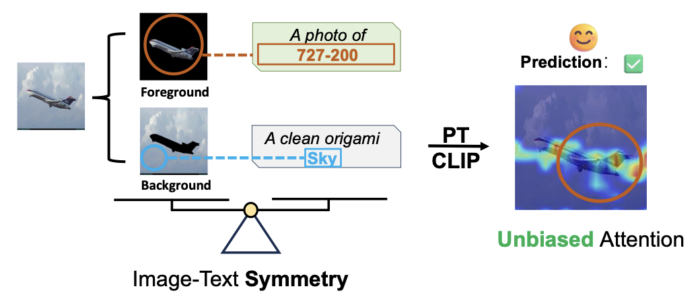
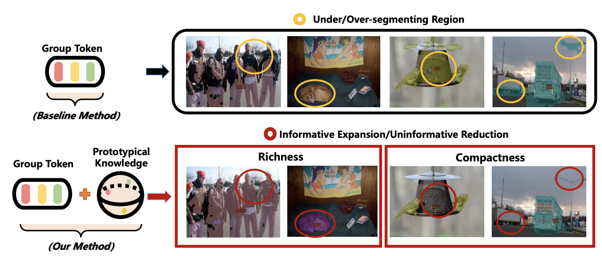
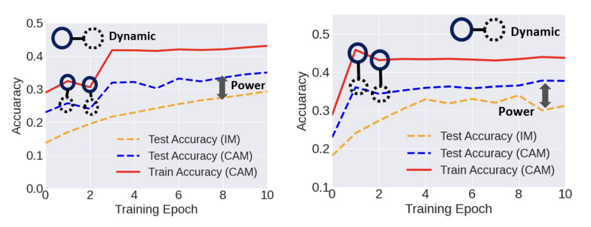
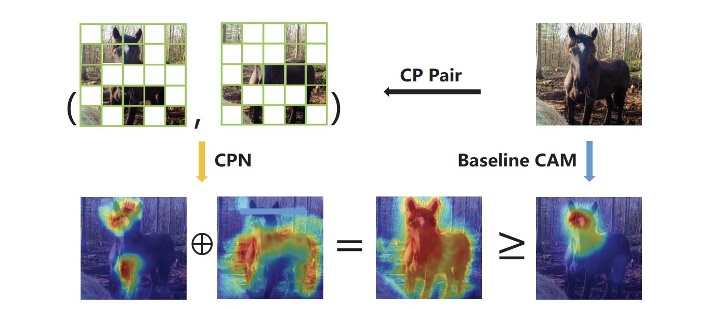
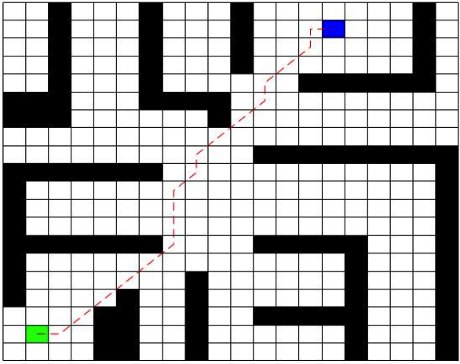

Hi, I'm Fei Zhang (张菲)
I am now a 3rd-year Ph.D. student in Shanghai Jiao Tong Univeristy & Shanghai Innovation Insitute, and fortunately advised by Jiaochao Yao, Tianfei Zhou (BIT), Pengfei Liu, and Ya Zhang.
Before that, I obtained my master's degree from Shanghai Jiao Tong University, fortunately advised by Chaochen Gu, Xinping Guan, and Yuchao Dai (NWPU). Prior to that, I obtained my bachelor's degree of Automation in Northwestern Polytechnical University, where I had a marvelous time in Xi'an!
My research primarily focuses on multi-modal representation learning and data-efficient learning, generally covering visual fine-grained recognition, multi-modal alignment, and visual generation. Now I am also a new beginner of the unified model/world model. I am always open to research discussions and collaborations; please feel free to contact me via email (ferenas AT sjtu.edu.cn).
Experience
Meta Research Scientist Intern, working on video generation, specifically on RGB-Alpha generation. I worked on an VAE-training-free method to enable an off-the-shelf video generative model to glyph Alpha representation ability. Meanwhile, I also took participate in the developement of unified model in our team.

Qwen Research Scientist Intern, working on developing Qwen3-VL. I specifically worked on helping improving the visual fine-grained recognition ability, and exploring effective multi-modal fusion mechanims. Besides, I helped improving the Qwen3-VL's ability on the multi-image recognition.
Selected Publications
TransText: Alpha-as-RGB Representation for Transparent Text Animation
Fei Zhang, Zijian Zhou, Bohao Tang, Sen He, Hang Li, Zhe Wang, Soubhik Sanyal, Pengfei Liu, Viktar Atliha, Tao Xiang, Frost Xu, Semih Gunel
A VAE-training-free I2V RGB-Alpha video generative framework, enabling fine-grained alpha-channel generation with simple spatial concatenation.


Uncovering Prototypical Knowledge for Weakly Open-Vocabulary Semantic Segmentation (NeurIPS'23)
Fei Zhang, Tianfei Zhou, Boyang Li, Hao He, Chaofan Ma, Tianjiao Zhang, Jiangchao Yao, Ya Zhang, Yanfeng Wang
Introducing prototupical knowledge to help better align visual and textual representation, yielding improved visual dense recognition.

Exploiting class activation value for partial-label learning (ICLR'22)
Fei Zhang, Lei Feng, Bo Han, Tongliang Liu, Gang Niu, Tao Qin, Masashi Sugiyama
Introducing visual class activation value to help address weakly supervised learning, implicitly forming accurate clean label through vision knowledge.


An Improved Algorithm of Robot Path Planning in Complex Environment Based on Double DQN
Fei Zhang, Chaochen Gu, Feng Yang
Designing adaptable algorithm for Double DQN to enable complex robotic planning through reward function and initilization improvement.